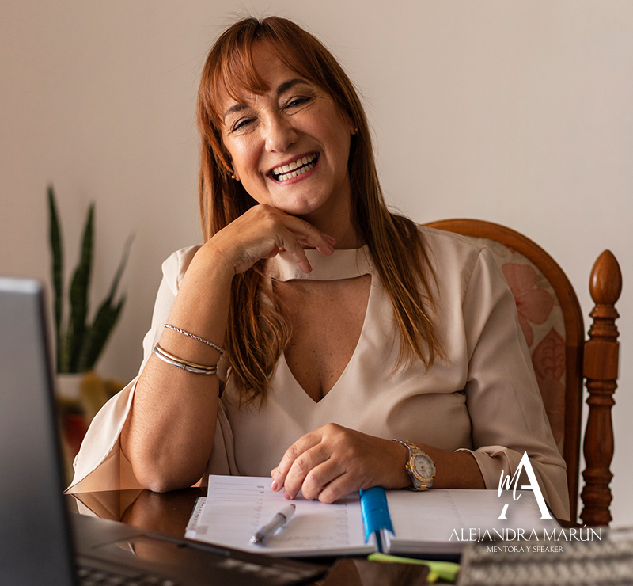
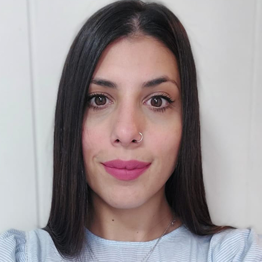
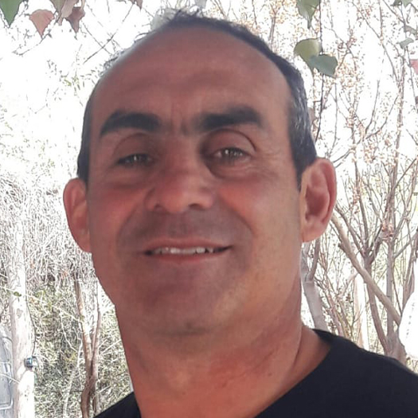

MENTORÍA
Alejandra MarúnSi eres un EMPRENDEDOR - EMPRENDEDORA y te pasa que:
● Procrastinas constantemente tu negocio.
● Nunca tienes tiempo para nada, ni tu negocio ni tu vida.
● Sabes que eres el principal saboteador de tu éxito.
● Sientes miedo al futuro, te cuesta encarar tu negocio.
● Estás sobrecargado de actividades y responsabilidades que no sabes por
donde abordar.
● Sientes incertidumbre por el contexto, por eso no emprendes.
● Realmente quieres que tu negocio funcione, pero no sabes por donde
empezar.
Y has intentado en el pasado resolver esto con:
● Capacitaciones que luego en la práctica no sabes abordar.
● Haciendo modificaciones en tu negocio que no resuenan contigo.
● Haces cambios que no puedes sostener en el tiempo.
● Haces más, pero no obtienes el resultado que deseas.
Y sin embargo, todavía no has podido lograr:
● Tener tiempo de calidad para tu negocio y tu vida.
● Facturar más con tu profesión o emprendimiento.
● Visualizar e incrementar oportunidades de mejora y crecimiento.
● Focalizar tu energía para que tu proyecto funcione.
● Minimizar márgenes de error del negocio.
● Buscar nuevos aliados que ayuden a tu crecimiento.
● Por fin llevar adelante tu emprendimiento, proyectando que se convierta en tu negocio, que te de dinero y tiempo.
● Capacitaciones que luego en la práctica no sabes abordar.
● Haciendo modificaciones en tu negocio que no resuenan contigo.
● Haces cambios que no puedes sostener en el tiempo.
● Haces más, pero no obtienes el resultado que deseas.
Y sin embargo, todavía no has podido lograr:
● Tener tiempo de calidad para tu negocio y tu vida.
● Facturar más con tu profesión o emprendimiento.
● Visualizar e incrementar oportunidades de mejora y crecimiento.
● Focalizar tu energía para que tu proyecto funcione.
● Minimizar márgenes de error del negocio.
● Buscar nuevos aliados que ayuden a tu crecimiento.
● Por fin llevar adelante tu emprendimiento, proyectando que se convierta en tu negocio, que te de dinero y tiempo.
Yo, Ale Marún, puedo ayudarte a resolver esto! Ayudo a emprendedores a crear un negocio sólido y escalable mediante mis servicios de mentorías personalizadas.
Mis Mentoring consta de:
● 6 Sesiones vía Zoom o Meet donde trabajaremos las siguientes temáticas:
● Análisis y evaluación de tu negocio actual.
● Planificación Estratégica para maximizar tiempos y resultados.
● Cómo Planificar el crecimiento: oportunidades de mejora y optimización
de procesos.
● La importancia de Innovar: ¿qué?, ¿cómo?.
● Sostener lo que sí realmente funciona.
● Buzón de sugerencias y expectativas tanto de clientes como potenciales.
clientes, asesores, colegas.
● La motivación: el combustible de los resultados.
● El ABC del Crecimiento.

TESTIMONIOS

Hola Aleeee! Inicié mis primeros pasos con la Mentoría luego de dejar mi trabajo de 12 años. Con mucho miedo empiezo de manera independiente como Productora Asesora de Seguros. Siento totalmente honesta también mis miedos eran mayores por creencias absorbidas sobre qué tanto me ayudarás, me asesorarás siendo colega. Y para mi sorpresa pude apoyarme tanto profesional como personalmente. Tu insistencia para ser más puntual con mis actividades, tus ganas y energía, tus propuestas para abrirme a mejorar opciones para mis clientes y por ende mi trabajo, no guardaste nada para vos!...fue realmente una experiencia abarcativa, generosa y comprometida que superó mis miedos y por supuesto mis expectativas! Fue la Mentoría el inicio de una apertura mental que no conocía!
María José Rodriguez
Conocerte como consecuencia de un dolor tan grande como lo fue el fallecimiento por Covid de mi padre, que era tu mentee me planteó interrogantes como si seguir o no sus pasos...tu dulzura, calidez convicciones y firmeza fueron en cada sesión el hilo conductor y la bisagra para que me redescubra y rearme mi proyecto de vida y el comercial-familiar. La tecnología suplió con creces las distancias geográficas y así es que pude sentirme escuchada y contenida para avanzar hacia mi propósito con mi alma emprendedora.
Anita Basanta
Siempre voy a recordar esa manera tan ágil y perpicaz de indagar para que busque y reconozca mis respuestas! Tus Mentorías me han permitido descubrir un mundo de posibilidades que no reconocía y estaban dentro de mí. Me hiciste sentir en confianza plena, ayudándome a darme cuenta de lo que soy capaz y de que realmente puedo lograr las metas que desee amalgamando perfectamente mi rol como mamá, esposa y trabajadora independiente. Sigo hoy sintiendo la misma emoción, la misma confianza absoluta y el mismo emponderamiento que sentía en esos espacios de Mentoría, e incluso en los seguimientos.
Vale Guizzo

GRACIAS Ale! desde que te conocí me ayudaste a reorganizarme con mi emprendimiento que incidió en mi vida personal. Es increíble cuánto abrí mi cabeza para incorporar nuevas técnicas de venta, expandirme abrazando tecno9logías y atreviéndome a delegar. Tus consejos, opiniones, asesoramiento, guías, materiales de lectura hicieron que pueda ver y abordar i Empresa con el plus del emprendimiento constante que ahora abrazo feliz porque me encuentro más firme y pleno cumpliéndolo paso a paso!
Sergio Prado
Como cliente tuyo en el rubro Seguro y por un hecho infortuito es que comenzamos la Mentoría. Si bien yo tenía una idea de qué hacer, poder ir dándole forma con una mirada más abarcativa, más general, hizo que me contagiara a atreverme, motivándome en todo, todo momento! tu visión. en los negocios, tus palabras,, tus herramientas tan distintas fueron el combo perfecto y necesario para crecer y superarme. Y voy por más proyectos!!
Sergio Adrián Gómez
Encontré en Alejandra una profesional apasionada por lo que hace, con su espíritu emprendedor y en evolución constante. Sus raíces en la docencia se ven reflejadas en su habilidad para acompañar. motivar y capacitar. Valoro enormemente su sinceridad y transparencia.
Rodrigo Segura
Alejandra es una luchadora incansable de mil batallas, un Ser con la capacidad de reinventarse y transformar su entorno en un ambiente más humano y prolífero. La vida la llevó por diferentes escenarios, los cuales conquistó a partir de su fuerza emprendedora, su tesón y su incansable voluntad. Hoy, con varios años en la actividad aseguradora, es un caso de éxito, de reinversión continua, poniendo como estandarte el asesoramiento y acompañamiento continuo de sus asegurados, superando incluso los desafíos que genera una Empresa Familiar. Sin lugar a dudas es una persona colmada de virtudes y muy generosa a la hora de compartirlas, con fuerte base en el análisis de las conductas humanas, basado en la interpretación y búsqueda de soluciones, un perfil ideal para comenzar a generar experiencias en la mentoría
Marcelo RambaudiMENTORÍA 1 - 1
● 6 sesiones individuales de 1, 15 donde trabajaremos vos y yo maximizando el tiempo para tu mayor provecho.
● Acceso a las reuniones grabadas.
● Seguimiento + Feedback mediante un grupo de WhastApp a fin de sacar todas tus dudas y puedas preguntar y consultar de manera que nuestra comunicación sea fluida.
● Acceso a todo el material complementario: Pdf, E - book.
● Road Map: hoja de ruta para llevar todos tus módulos, y metas exitosamente.
● Paso a paso de cada proceso, de cada etapa.
● Bonus extra:"S.P.A. 365" Soporte Post - Asistencia:, LOS 365 DÍAS DEL AÑO!!!!!
Y... para los primeros diez inscriptos, Bonus Especial:
● Desayuno para Emprendedores con invitados sorpresa!!!
CONSULTAR COSTO POR WHATSAPP
Si eres un PROFESIONAL:
Si te has esforzado para saber lo que sabes y hoy lo brindas con calidad, compromiso y responsabilidad, necesitas validarlo haciendo que tus clientes paguen gustosos tu servicio.
La Mentoría será de gran ayuda para trabajar tu Perfil Profesional en el mundo de los negocios:
Obtendrás:
● Plan de acción personalizado / institucional integral que te guiará en cada etapa.
● Mapa estratégico: a la medida de tus habilidades, tu sector, tu situación personal, tu equipo.
● Gestión empresarial: modelo de negocio que funcione para tu empresa.
● Visión empresarial renovada: con mayor capacidad para motivar al personal y tomar decisiones estratégicas.
● Realización personal: tu entorno y tus clientes reconocerán tu trabajo. Encontrarás sinergias pues tendrás el tipo de vida que quieres llevar, ya seas un Profesional Novato o Experimentado.
MENTORÍA 1 - 1
● 8 sesiones individuales de 1, 30 donde trabajaremos maximizando el tiempo para tu mayor provecho.
● Acceso a las reuniones grabadas.
● Seguimiento + feedback mediante un grupo de whatsapp a fin de sacar todas tus dudas y puedas preguntar y consultar de manera que nuestra comunicación sea fluída.
● BONUS EXTRA: "S.P.A.365"Soporte Post - Asistencia los 365 días del año!!! LO PONDRIA DE MANERA CREATIVA QUE RESALTE ESTO DE IGUAL MANERA EN LA PAG PARA EMPRENDEDORES.
Y....para los primeros diez inscriptos, Bonus Especial:
workshop con invitados sorpresa!!
CONSULTAR COSTO POR WHATSAPP